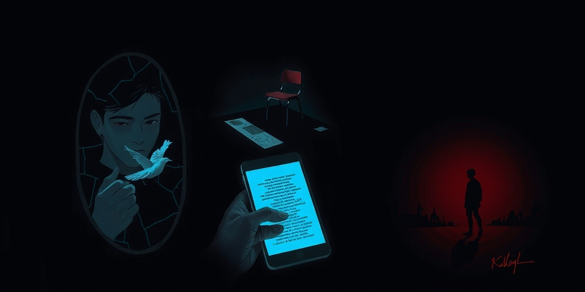
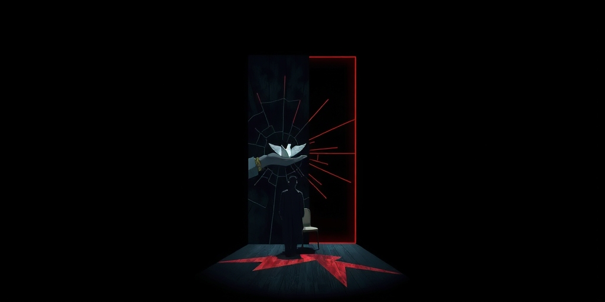
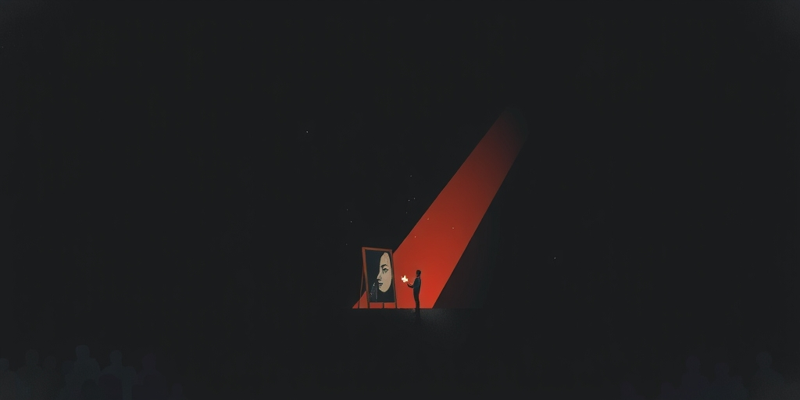
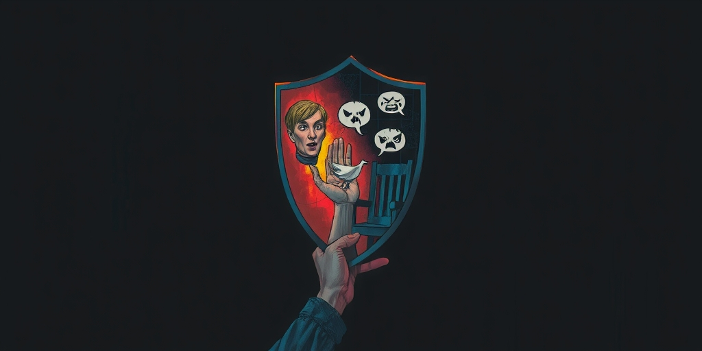

小汪老师的成长洞察 · 属于你的成长专栏
深夜十一点，你划动手机屏幕，为一句辛辣的职场吐槽点赞。你不是在消磨时间，而是在完成一次秘密的情绪兑换——用别人的刻薄，换自己紧绷神经片刻的松弛。这并非个人趣味，而是一代人在情绪高压下，共同修筑的泄压通道。

犀利的职场段子，刻薄的婚姻点评，对某类群体的精准嘲讽。这些内容在你手机的信息流里异常活跃。你收藏、转发、在评论区打出一个‘太真实了’。这个动作完成后，你会感到一阵轻微的舒畅，仿佛积压的不满找到了一个出口。
但这个出口是安全的。它由陌生人提供，经过算法精心配比，落在公共领域。你只是围观者和赞同者，不必承担表达的风险。这成了一种高效的情绪兑换：零成本投入，换取可感知的情绪回报。它已经不是娱乐，而是一套成熟的社会情绪管理系统的前端接口。

成年人的世界有一条隐形的规训：情绪要得体。职场要求专业冷静，家庭角色需要稳定可靠，社交场合讲究温文尔雅。愤怒、鄙视、嫉妒，这些情绪被归类为‘负面’，必须被打包、压缩，存放在内心的后台程序里，不得随意运行。
于是，压抑成为常态。但压力不会消失，它只会在密闭空间里积聚。这时，毒舌内容出现了。它像一个特制的、朝向外部的泄压阀。有人替你尖锐，替你刻薄，替你把那些你不敢、不愿、不能说出口的话，用一种夸张的、安全的方式说了出来。你通过消费它，完成了情绪的代偿性释放。这解释了为什么一个平日里最讲道理的人，私下里会痴迷于最不讲道理的吐槽——他需要那个阀门。这与心理学家观察到的成年人社交能量管理策略一脉相承：我们都在寻找低成本、高效率的方式，处理内部的情绪负载。

毒舌内容的结构极其稳定：它必须树立一个靶子——某类人群、某种行为、某个现象——然后对其进行降维打击。当你为这种打击喝彩时，一个巧妙的心理定位同步完成：你默认自己站在了批评者一侧，与被批判的‘他们’不同。
这是一种高效的社会区分机制。在阶层流动放缓、个体成就变得模糊的时代，‘认同一种观点’就成了最便捷的身份声明。它让你在瞬间获得‘我看穿了’、‘我和他们不一样’的优越感，而这种优越感的获取，不需要你真正完成任何困难的建设。它不提供真正的力量感，只提供片刻的、幻觉般的清醒。算法进一步强化了这个过程，它把你喜欢的刻薄推得越来越精准，让你误以为自己掌握了某种‘真相’，实际上是陷入了同一种情绪的回音壁。

转发一句毒舌，是一次精确的社交表态。它向你的圈子宣告：我真实，我不装，我有洞察力。在‘真诚’变得稀缺、而‘表演真诚’泛滥的社交场上，刻薄常常被误读为一种勇气。它成了一种硬通货，可以快速筛选出‘同道中人’，建立起基于共同嘲讽对象的虚拟同盟。
这背后是一个更冷峻的观察：当一个社会里毒舌内容大行其道，往往意味着两件事正在同时发生。一是公共情绪的正式出口正在收窄，人们难以在规则内畅快表达异议或不满。二是日常的、建设性的批评空间在萎缩。毒舌提供的是一种情绪上的‘爽感’，它解构权威，但不提供替代方案；它刺破幻象，但不指向重建。它让你在笑声中保持原地不动。
写给你的话
你笑得最畅快的那句毒舌，或许正精准地命中了你某个不敢正面言说的角落。这没什么可羞愧的。只是，当这个泄压阀长期只安在别人嘴上，你自己的情绪表达肌肉会不会萎缩？
当你依赖外部的刻薄来获得松弛，你是否也同时交出了定义自身不满的权利？那个替你说话的陌生人，他塑造的是你的观点，还是你的情绪模式？
参考资料
[1] Psychology suggests adults who leave parties without long goodbyes aren’t rude: They’re protecting the social energy they still need after the room stops watching (The Economic Times) https://economictimes.indiatimes.com/news/international/us/psychology-suggests-adults-who-leave-parties-without-long-goodbyes-arent-rude-theyre-protecting-the-social-energy-they-still-need-after-the-room-stops-watching/articleshow/131422150.cms
[2] I've studied over 200 kids-the ones with high emotional intelligence do 7 things (CNBC) https://www.cnbc.com/2026/05/31/ive-studied-over-200-kidsthe-ones-with-high-emotional-intelligence-do-7-things.html
小汪老师的成长洞察 · 属于你的成长专栏